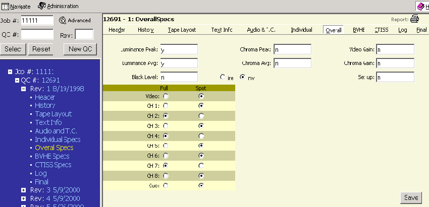

Alt+o then ENTER will take you to this page or clicking on OVERALL in the menu bar on the right side. You can also click on the word OVERALL SPECS in the Tree Frame (blue area).

The Overall Specs page displays fields for the following information which includes:
|
|
A number of fields include pull down menus with predetermined choices. Included are radio buttons where only 1 choice is allowed. After entering the information please click the SAVE button to save your data.